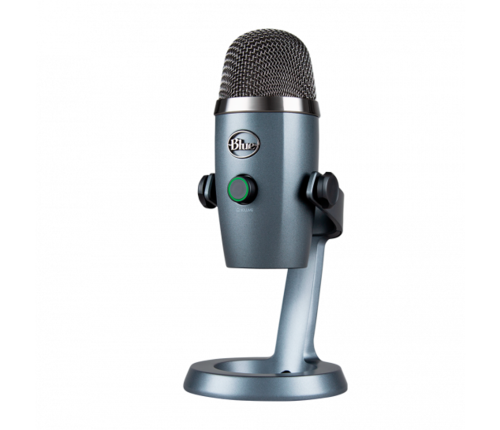

MICROFONE HYPERX SOLOCAST
PEDESTAL AJUSTÁVEL
USB
Para editores de vídeo, streamers e gamers que procuram um microfone USB com alta qualidade de som, o HyperX SoloCast é obrigatório. Ele é Plug N Play, tornando-o simples de usar, com alguns dos nossos recursos favoritos como o sensor de toque para silenciar e o LED indicador de microfone em mudo.
R$ 499,99ADICIONAR AO CARRINHO
REMOVER DO
CARRINHO
LIMPAR O CARRINHO
